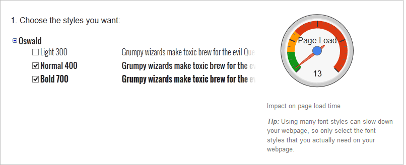
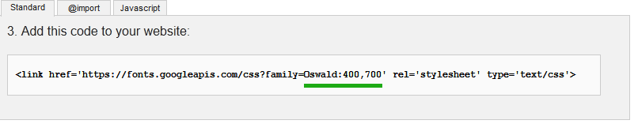
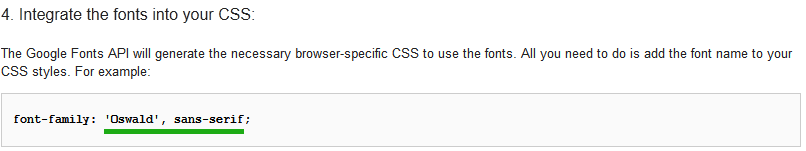

Visit the font library on Google and browse to the font you wish to use. When you found your font, click on the Quick use button as shown below
Select which font weights to include. Please note that more font weights result in a slightly larger file to load. Do not import more font weights than you need.
For the Font Import, copy the name and font weights prefix as shown below. Eg Oswald:400,700
For the Font Name, copy the font name as shown below. Eg 'Oswald', sans-serif
